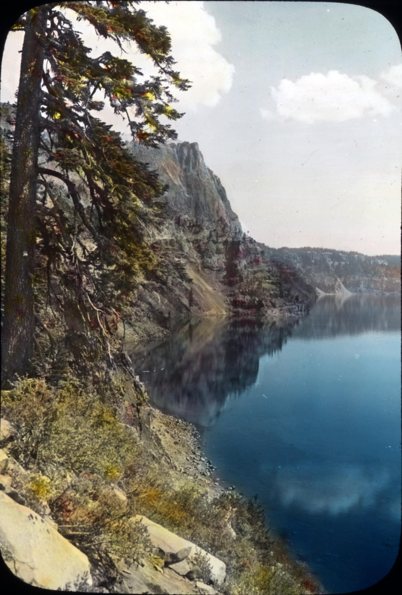

Crater Lake
Crater Lake is a crater lake in south-central Oregon in the western United States. It is the main feature of Crater Lake National Park and is famous for its deep blue color and water clarity. The lake partly fills a nearly 2,148-foot (655 m)-deep caldera that was formed around 7,700 (± 150) years ago by the collapse of the volcano Mount Mazama. There are no rivers flowing into or out of the lake; the evaporation is compensated for by rain and snowfall at a rate such that the total amount of water is replaced every 250 years. With a depth of 1,949 feet (594 m), the lake is the deepest in the United States. In the world, it ranks ninth for maximum depth, and third for mean (average) depth.
Crater Lake features two small islands. Wizard Island, located near the western shore of the lake, is a cinder cone approximately 316 acres (128 ha) in size. Phantom Ship, a natural rock pillar, is located near the southern shore.
Since 2002, one of the state's regular-issue license plate designs has featured Crater Lake and a one-time plate surcharge is used to support the operation of Crater Lake National Park. The commemorative Oregon State Quarter, which was released by the United States Mint in 2005, features an image of Crater Lake on its reverse.
The lake and surrounding park areas offer many recreational activities including hiking, biking, snowshoeing, fishing, and cross-country skiing are available, and during the summer, campgrounds and lodges at Crater Lake are open to visitors.
Location
Crater Lake is in Klamath County, approximately 60 miles (97 km) northwest of the county seat of Klamath Falls, and about 80 miles (130 km) northeast of the city of Medford.
In June 1853, John Wesley Hillman became the first non-Native American explorer to report sighting the lake he named the "Deep Blue Lake." The lake was renamed at least three times, as Blue Lake, Lake Majesty, and finally Crater Lake.
Geology
Mount Mazama, part of the Cascade Range volcanic arc, was built up mostly of andesite, dacite, and rhyodacite over a period of at least 400,000 years. The caldera was created in a massive volcanic eruption between 6,000 and 8,000 years ago that led to the subsidence of Mount Mazama. About 50 cubic kilometers (12 cu mi) of rhyodacite was erupted in this event. Since that time, all eruptions on Mazama have been confined to the caldera.
Lava eruptions later created a central platform, Wizard Island, Merriam Cone, and other, smaller volcanic features, including a rhyodacite dome that was eventually created atop the central platform. Sediments and landslide debris also covered the caldera floor.
Eventually, the caldera cooled, allowing rain and snow to accumulate and form a lake. Landslides from the caldera rim thereafter formed debris fans and turbidite sediments on the lake bed. Fumaroles and hot springs remained common and active during this period. Also after some time, the slopes of the lake's caldera rim more or less stabilized, streams restored a radial drainage pattern on the mountain, and dense forests began to revegetate the barren landscape. It is estimated that about 720 years was required to fill the lake to its present depth of 594 metres (1,949 ft). Much of this occurred during a period when the prevailing climate was less moist than at present.
Some hydrothermal activity remains along the lake floor, suggesting that at some time in the future, Mazama may erupt once again.
In 2008, scientists submerged a robot into the lake to collect more geological information to compare to the data obtained in the 1980s. The scientists hypothesized that the moss was about 6,000 years old by measuring the age of pollen that blew into the lake and mixed with the sediment.
Ecology
Since the collapse of Mount Mazama due to a volcanic eruption formed Crater Lake, no fish inhabited the lake until William G. Steel decided to stock it in 1888 to allow for fishing. Regular stocking continued until 1941, when it was evident that the fish could maintain a stable population without outside interference. Six species of fish were originally stocked, but only two species have survived: Kokanee Salmon and Rainbow Trout with Kokanee being the most plentiful. Fishing in Crater Lake is promoted because the fish species are not indigenous to the lake.
Crater Lake is also known for the "Old Man of the Lake", a full-sized tree which is now a log that has been bobbing vertically in the lake for over a century. The low temperature of the water has slowed the decomposition of the wood, hence its longevity.
In 1987, scientists sent a submersible down to the depths of Crater Lake to obtain more information about the geology at the bottom of the lake, and inspect moss samples found in moss beds as deep as 600 feet (180 metres).
Due to several unique factors, mainly that the lake has no inlets or tributaries, the waters of Crater Lake are some of the purest in the world because of the absence of pollutants. Clarity readings from a Secchi disk have consistently been in the high-30 meter to mid-20 meter (80 to 115-foot) range, which is very clear for any natural body of water. In 1997, scientists recorded a record clarity of 53.3 m (175 ft).
The lake has relatively high levels of dissolved salts, total alkalinity, and conductivity. The average pH has generally ranged between 7 and 8.
Sacred Significance
The Klamath tribe of Native Americans, whose oral history describes their ancestors witnessing the collapse of Mount Mazama and the formation of Crater Lake, regard the lake as an "abode to the Great Spirit". Klamath oral history tells of a battle between the sky god Skell and the god of the underworld Llao (a prominent feature at Crater Lake is Llao Rock). Mount Mazama was destroyed in the battle, creating Crater Lake, called giiwas in the Klamath language. The Klamath people used Crater Lake in vision quests, which often involved climbing the caldera walls and other dangerous tasks. Those who were successful in such quests were often regarded as having more spiritual powers. The tribe still holds Crater Lake in high regard as a spiritual site.

Recreation
Located 56 miles (90 km) north of the city of Klamath Falls and 62 miles (100 km) northeast of Medford, Crater Lake can be reached from U.S. Route 97 on the east, on the southwest by Highway 62, and on the northwest by Highway 138. Crater Lake and the remnants of Mount Mazama can be seen from Rim Drive, a 33-mile (53 km) road that surrounds the caldera, which is the only part within the Crater Lake National Park where vehicles are permitted. The Garfield Peak Trail, which runs 1.5 miles (2.4 km) east from the Crater Lake Lodge, offers views from 1,900 feet (580 m) above the lake's surface, with Mount Shasta visible 125 miles (201 km) southward. Another trail runs for 2.5 miles (4.0 km) from Rim Drive's eastern edge to Mount Scott, which offers views of central and southern Oregon such as the Three Sisters located 80 miles (130 km) north of Mazama and Mount Thielsen, also to the north. The Cleetwood trail leads for 1 mile (1.6 km) down the northern flank of the caldera rim, eventually reaching Cleetwood Cove where boat trips run from late June or early July throughout the summer season to Wizard Island. Wizard Island can be climbed, offering views of Crater Lake.
Swimming is permitted in Crater Lake, but the only way to safely and legally get to the shore is by following Cleetwood Cove trail and people can enter the water from there. Other activities include fishing and a 2-hour boat tour around the lake provided by a Park Ranger from Crater Lake National Park.
As the region lies within a national park area, collecting rocks within the vicinity is prohibited unless a permit is obtained. The park's facilities lie at Rim Village, at the southern edge of the caldera. Lodging and camping facilities open during the summer season between May and October. No lodges, gas stations, or camping areas remain open from October through late May. Popular activities within Crater Lake National Park include biking, fishing, cross-country skiing, and snowshoeing.